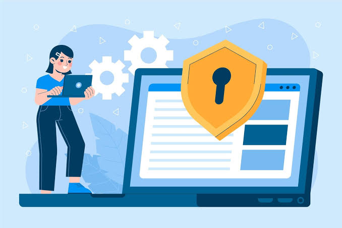

Cara Menggunakan Media Sosial Dengan Benar
Tetapkan Tujuan Sebelum Bermedia Sosial: Sebelum menggunakan media sosial, tentukan terlebih dahulu tujuan penggunaannya, seperti mencari informasi, hiburan, atau terhubung dengan teman. Dengan begitu, kita bisa memilih platform yang sesuai dengan kebutuhan.
Pilah-Pilih Konten yang Ingin Dibaca: Pilih akun yang dekat dan terpercaya untuk diikuti agar terhindar dari hoaks dan konten negatif. Gunakan fitur mute, unfollow, atau block jika ada akun yang mengganggu.
Berhati-Hati dalam Menyebarkan Informasi: Sebelum membagikan sesuatu, kita harus memikirkan dampaknya karena setiap orang memiliki pendapat yang berbeda. Sebaiknya bagikan informasi bermanfaat bagi orang lain.
Perhatikan Informasi Pribadi: Jangan sembarangan membagikan informasi pribadi seperti nomor telepon, alamat, dan data keuangan. Gunakan pengaturan privasi, kata sandi yang kuat untuk mengurangi risiko datanya digunakan untuk keperluan lain (pinjol,dll)
Batasi Penggunaan Media Sosial: Penggunaan media sosial yang terlalu lama dapat menyebabkan kecanduan dan mengganggu kesehatan mental. Batasi waktu penggunaan dan gunakan waktu luang untuk kegiatan lain yang lebih bermanfaat.
